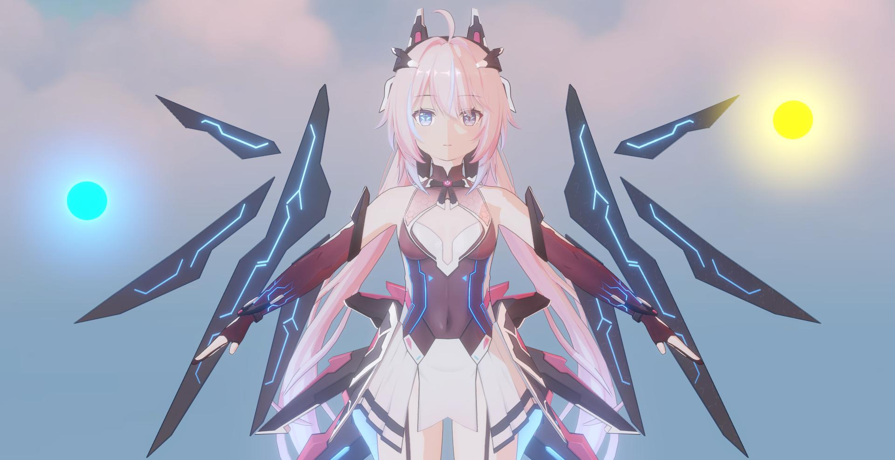
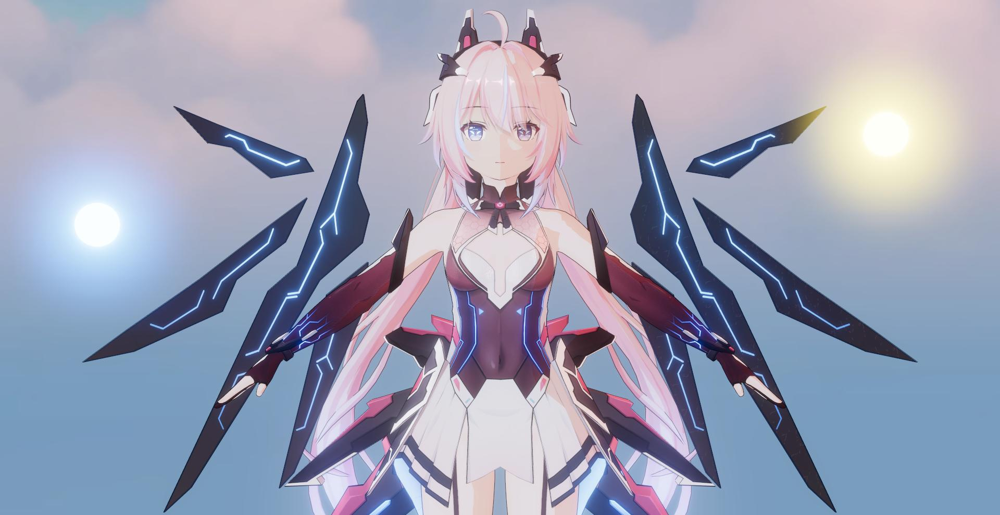
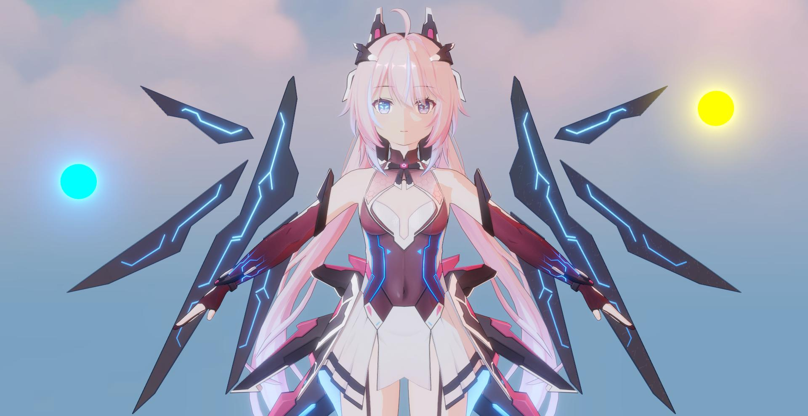

Tone Mapping (Update in Version 1.3.0)
What is Tone Mapping?
Tone Mapping is the process of adjusting the brightness of an image so it can be properly displayed on screen.
last_modified_at: 2026-05-04
What does Tone Mapping actually fix?
Tone Mapping is not just about “reducing brightness” It is about reshaping how light behaves across the entire image
What Tone Mapping controls:
- How quickly highlights turn white
- How deep shadows appear
- Whether colors are preserved or desaturated
- The overall contrast of the image
last_modified_at: 2026-05-04
Built-in Tone Mapping vs ZLZ Tone Mapping
By default, Unity provides two main tone mapping options: Neutral and ACES
Neutral

Neutral tone mapping is designed to preserve the original color response as much as possible.
Characteristics:
- Preserves color relatively well in high-intensity areas
- Produces a softer, slightly washed-out look
- Lower contrast, which can make the image feel less sharp or slightly dull
ACES

ACES is designed to produce a more cinematic and physically-inspired result.
Characteristics:
- Higher contrast with a strong cinematic look
- Highlights tend to shift toward white under intense lighting
- Shadows can become overly dark (crushed)
- Very bright areas may appear too intense or lose detail
last_modified_at: 2026-05-04
ZLZ Tone Mapping
ZLZ Tone Mapping provides two curve options:
1. Anime Curve (Recommended)

Designed to preserve the visual quality of Anime-style rendering
Key features:
- Maintains a sharp and well-defined image
- Preserves color even in high-intensity lighting
- Enhances color vibrancy for a more appealing look
- Highlights do not turn white too quickly or too aggressively
- Shadows remain readable and do not become overly crushed
2. Filmic Curve

Designed for a more cinematic and natural-looking result
Key features:
- Produces a smoother and more balanced image (less flat than Neutral)
- Preserves color better than ACES in bright areas
- Colors look good but are less saturated than Anime Curve
- Highlights are controlled and do not blow out too quickly
- Shadows remain softer and more natural
last_modified_at: 2026-05-04
Compare Tone Mapping


last_modified_at: 2026-05-04
Setup Tone Mapping

- Go to Project Settings > Quality, Under Render Pipeline Asset, select the active URP Asset
- Select the Universal Renderer Data, then add the ZLZ Anime ToneMapping feature.
- Create a Global Volume and add ZLZ Anime ToneMapping and Bloom overrides.
Post Processing > High Dynamic Range

Important: Make sure that High Dynamic Range (HDR) is enabled in the URP Post Processing settings.
last_modified_at: 2026-05-04
Using Tone Mapping
- By default, ZLZ Anime Shader provides two tone mapping options: Anime Curve and Filmic Curve
- You can adjust the parameters to fine-tune the image based on your desired art direction
- While adjusting, you can preview the result using the Curve Preview in the Editor in real-time
- After tuning, you can click Save as My Default to store your settings, and use Reset to My Default to restore them at any time
- If needed, you can click Restore Factory to revert back to the original default settings
last_modified_at: 2026-05-04
Anime Curve Parameters

- Exposure : Adjusts the overall brightness of the image
- Tone Map Scale : Controls tone mapping intensity → used with Exposure
- Highlight Rolloff : Controls how quickly highlights transition toward maximum brightness
- Highlight Lift : Increases overall highlight brightness → makes bright areas stand out more
- White Clip : Defines the highlight range → controls how far highlights can reach maximum brightness
- Shadow Pedestal : Raises shadow levels → prevents the image from becoming too dark or fully crushed
- Mid Contrast : Increases contrast in the mid-range → enhances image clarity without heavily affecting highlights
- Saturation Retention : Preserves color saturation in bright areas → reduces washed-out highlights
last_modified_at: 2026-05-04
Filmic Curve Parameters

- Exposure : Adjusts the overall brightness of the image
- Tone Map Scale : Controls tone mapping intensity → used with Exposure
- Shoulder Strength : Controls highlight compression → smooths highlight transition
- Linear Strength : Controls the clarity of the mid-range → affects the overall contrast of the image
- Linear Angle : Adjusts the light transition in the mid-range → helps balance between midtones and highlights
- Toe Strength : Controls the shadow transition → makes shadows smoother and less harsh
- Black Level : Raises black levels → prevents shadows from becoming fully crushed
- Denominator Balance : Adjusts the overall shape of the curve → affects how light is distributed across the image
- White Point : Defines the maximum brightness range → controls how highlights are mapped
- Saturation : Adjusts color intensity after tone mapping → helps control the overall vibrancy of the image